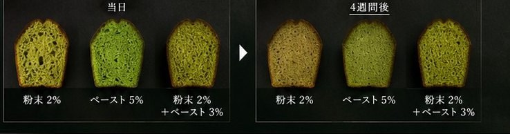

ペースト茶加工
茶葉を軟化・粉砕し、なめらかなペーストに。着色料を使わずに自然の色を固定し、加熱しても緑を保ちます。
詳しく
昭和38年の創業以来、近江・土山の地でお茶の加工ひと筋に歩んできました。創業者が約10年の研究の末に生み出した日本初のインスタント茶にはじまり、ペースト茶、粉末茶、そしてお客様の原料をかたちにするOEM受託加工へ。
受け継いできた技術で、お茶の新しい使い方を食品メーカー、菓子店、飲食店の皆さまへ。私たちは、お茶の色・香り・味わいを「素材」として届ける加工メーカーです。


彩ペーストは、厳選した国産素材を丁寧に仕込み、銅鍋でじっくりと炊き上げたプレミアムなペーストです。素材本来の鮮やかな色合いと豊かな香りを閉じ込め、お菓子づくりの可能性を広げます。
時間が経っても色が変わりにくく、鮮やかな緑を保ちます。
均一に混ざりやすく、なめらかな食感と美しい仕上がりを実現します。
製菓・製パン・和菓子・ドリンクなど、幅広い用途で安定した品質をお届けします。
マドレーヌと蒸しケーキで、抹茶パウダー単独と彩ペースト配合の色の変化を4週間にわたって比較しました。パウダー2％単独では早い段階で退色が見られた一方、ペーストを配合したマドレーヌは4週間後も鮮やかな発色を保っています。
※自社試験による結果。室温・蛍光灯の継続照射下、透明包装で保存。
試験データを詳しく見る
茶葉の色・香り・味わいを、使う場面に合わせたかたちへ。インスタント化、ペースト化、粉砕、そしてお客様の原料の受託加工まで、一貫して自社で手がけています。
銅鍋で炊き上げた、プロのための抹茶・ほうじ茶ペースト。退色を抑え、美しい発色が長く続きます。
緑茶・抹茶・玄米茶・ほうじ茶・紅茶のペースト。殺菌済みで常温での流通が可能です。
緑茶・ほうじ茶など。1g入りスティックをはじめ、ご要望の形態に対応します。
土山茶を丁寧に挽いた微粉末茶と、0.3〜1.5mmの粗挽き茶。菓子・料理・ドリンクに。
造粒時にお茶のエキスを加え、抹茶の褐変・変色を抑えた顆粒タイプの抹茶です。
滋賀は、平安時代に最澄が唐から持ち帰った茶の種を比叡山の麓に植えたことが、日本茶のはじまりと伝えられる地。
鈴鹿の山々に抱かれた甲賀市土山町は、朝夕の寒暖差と霧に恵まれた、県内有数の茶どころです。私たちはこの土山で、近江茶の魅力を加工の技術で引き出し、次の世代と世界へつないでいきます。
日本緑茶のあゆみ製菓・製パン・和菓子・飲料メーカー様、飲食店様からのご相談を承ります。用途や配合に合わせた加工もお気軽にお問い合わせください。
TEL0748-67-0215